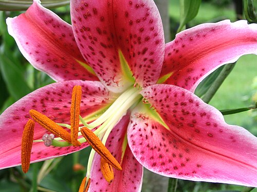
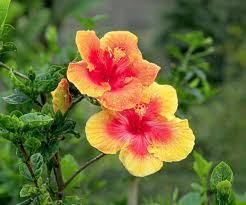

Lilium 'Stargazer' (the 'Stargazer lily') is a hybrid lily of the 'Oriental group'. Oriental lilies are known for their fragrant perfume, blooming mid-to-late summer. Stargazers are easy to grow and do best in full sunlight.
A rose is either a woody perennial flowering plant of the genus Rosa, in the family Rosaceae, or the flower it bears. There are over three hundred species and tens of thousands of cultivars

Hibiscus is a genus of flowering plants in the mallow family, Malvaceae. The genus is quite large, comprising several hundred species that are native to warm temperate, subtropical and tropical regions throughout the world.
 My Garden Continued